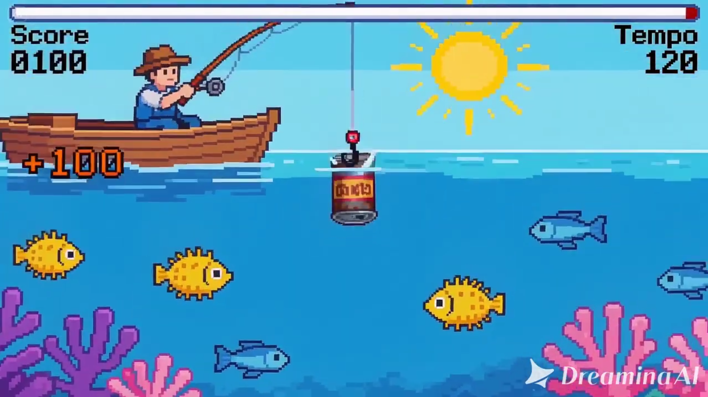

04 — Galeria
Imagens do Projeto
Registros do projeto interativo em fase de planejamento.



Portfólio Educacional · 2025
Uma experiência interativa sobre a poluição marinha.
01 — Descrição
O projeto CleanSeas é um projeto interativo que exibe os impactos da poluição marinha, onde você é um pescador que precisa coletar lixo do oceano para salvar a vida marinha. O jogador movimenta o barco, a rede ou o anzol com o objetivo de capturar objetos e precisa coletar uma quantidade mínima de lixo dentro de um tempo limite.
02 — ODS
O projeto se articula com múltiplos ODS da Agenda 2030 da ONU, contribuindo para metas globais de educação, conservação marinha e ação climática.
Conscientização sobre conservação e uso sustentável dos oceanos e recursos marinhos.
Promoção de aprendizagem inclusiva, equitativa e de qualidade para todos os estudantes.
Fortalecimento da resiliência e da capacidade adaptativa às mudanças climáticas.
Fortalecimento dos meios de implementação e revitalização da parceria global.
03 — BNCC
O projeto está alinhado a competências e habilidades da BNCC, promovendo aprendizagens integradas entre Ciências da Natureza, Língua Portuguesa, Arte e Tecnologia.
EF05GE10 — Identificar os impactos da poluição nos ecossistemas marinhos e suas relações bióticas e abióticas.
EF69LP07 — Produzir textos multimodais para comunicar mensagens sobre conservação marinha em jogos educacionais.
EF69AR06 — Desenvolver processos de criação em artes visuais, com base em temas ou interesses artísticos, de modo individual, coletivo e colaborativo, fazendo uso de materiais, instrumentos e recursos convencionais, alternativos e digitais.
04 — Galeria
Registros do projeto interativo em fase de planejamento.

05 — Demonstração
Assista ao vídeo de exemplo do projeto interativo, mostrando os impactos da poluição marinha e como funcionará a jogabilidade.
↓ Baixar apresentação